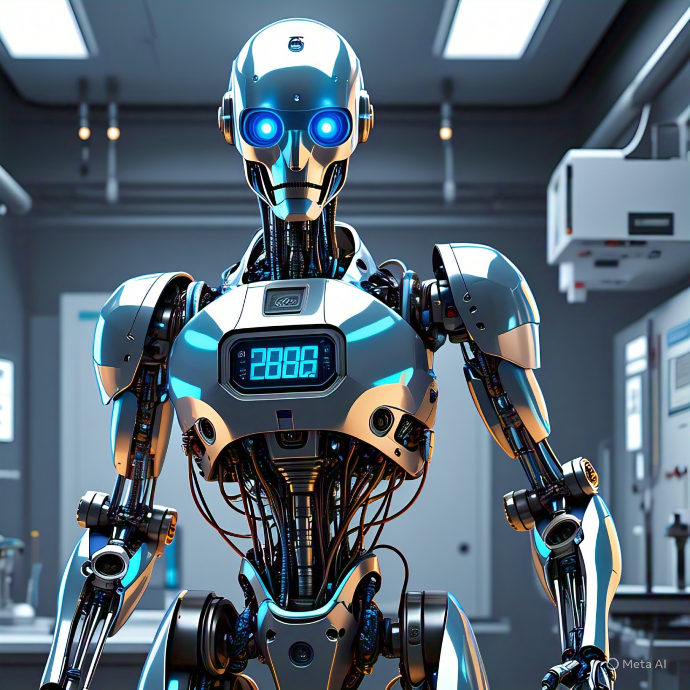

Inteligência Artificial e o Futuro: Transformação, Não Substituição A inteligência artificial (IA) está moldando o futuro da humanidade com uma velocidade impressionante. De assistentes virtuais a carros autônomos, passando por diagnósticos médicos e sistemas de recomendação, a IA já faz parte do nosso dia a dia — e essa influência só tende a crescer.
Mas, junto com as oportunidades, vêm os desafios. A IA levanta questões éticas, como o uso responsável dos dados, o risco de viés nos algoritmos e o impacto no mercado de trabalho. Por isso, o futuro da IA também depende de decisões humanas conscientes, transparentes e justas.
O futuro da IA será construído por pessoas que souberem usar a tecnologia com responsabilidade, criatividade e propósito. Não é sobre competir com máquinas, mas sim colaborar com elas para construir um mundo mais eficiente, inclusivo e inteligente.
